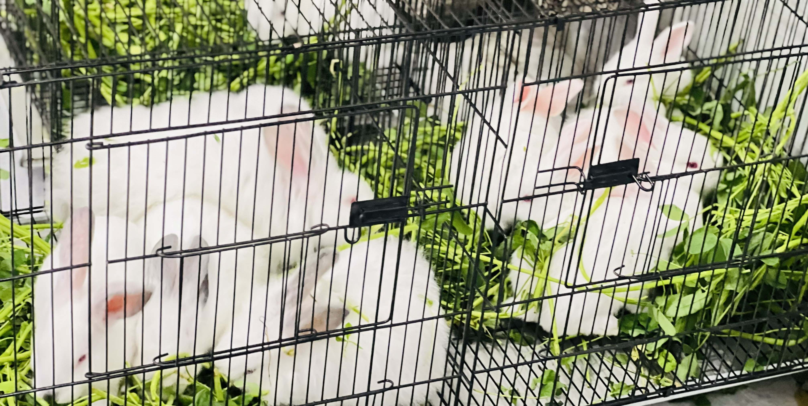
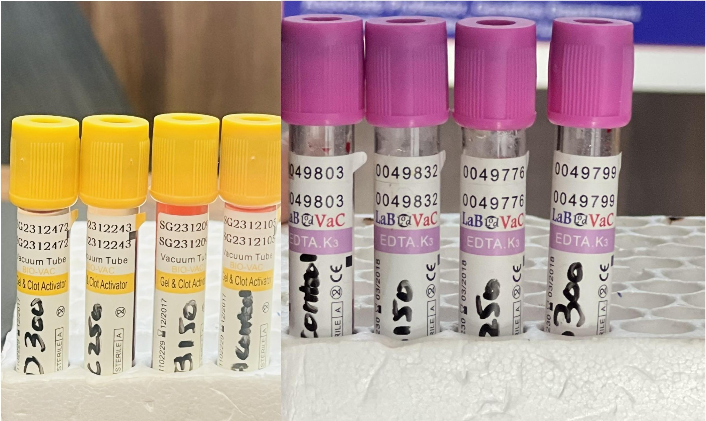

Back to Portfolio
Dose- and Time-Dependent Biphasic Modulation of Physiological Responses by Poppy Seed Supplementation in Rabbits
Status: Under Peer ReviewResearch Overview
This study was designed to analyze the impact of poppy seeds on blood profile, liver function, growth performance and tissue redox parameter of rabbits.
Methodology
To execute this research 72 rabbits were taken and divided into four groups with each group containing 18 rabbits. The chemical profile of poppy seeds was assessed via AOAC guidelines. The studied groups were fed with varied quantity of poppy seeds for 45 days. The complete blood count (CBC), liver functioning (ALT, AST, ALP, bilirubin, and albumin), growth performance by evaluating FCR, lipid peroxidase including MDA level, and catalase activity were assessed after 15, 30, and 45 days.
Key Findings
- The compositional analysis of poppy seeds exhibited a balanced nutritional component along with the generous quantity of linoleic and oleic acid.
- Univariate ANOVA revealed that the low dose of poppy seed meal had a positive effect on the studied parameters throughout the investigation period.
- Medium dose caused extremely positive impact on all parameters but was time dependent up till 30th day and showed negative impact at 45th day except for weight gain and FCR.
- High dose possessed dose dependent effect and showed negative impact on all parameters throughout the study.
- The findings contributed to the establishment of a safety margin for poppy seed consumption, as well as the evaluation of the dosage and time dependent approach.

